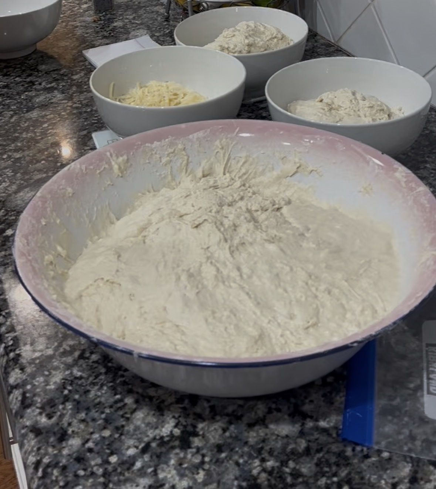

Starter
My Sourdough Story & Method
How I got started, what went wrong, and the exact process I now use every single week.
Welcome to Baking Frenzy — a journal of baking recipes out of love and sugar. Also sourdough starters, long ferments, and everything baked with patience and flour-dusted hands.

How I got started, what went wrong, and the exact process I now use every single week.
Bagels, focaccia, crakers, and pancakes — all made with a live starter.

Stretch and fold, cold retard, shaping, scoring — the skills that made everything click.
Baking sourdough is as much about memory and intuition as it is about recipes. I kept forgetting what I changed, what worked, and what didn't. So I started keeping notes — and eventually decided to share them.
This site is my evolving record of how I bake: what I've learned, what I've burned, and the loaves that made everything worthwhile. Everything here is based on real bakes in a regular home kitchen.
"Good bread is the most fundamentally satisfying of all foods; and good bread with fresh butter, the greatest of feasts."
— James Beard🌡 Baker's Tip
Sourdough fermentation is temperature-driven. A dough that takes 4 hours at 78°F might need 6+ hours at 68°F. Your kitchen's temperature matters more than the clock.